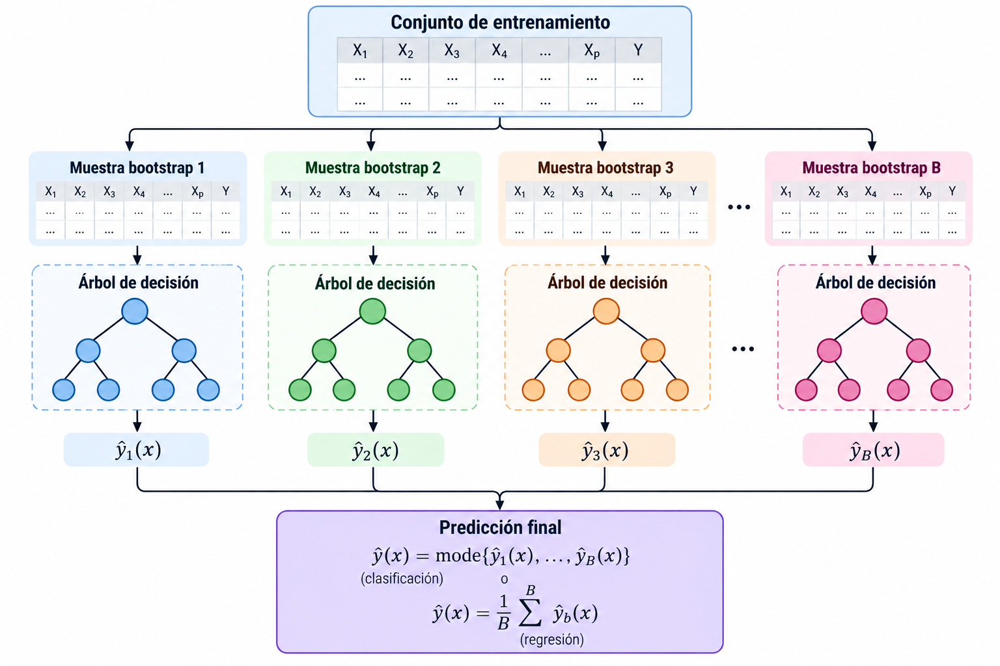
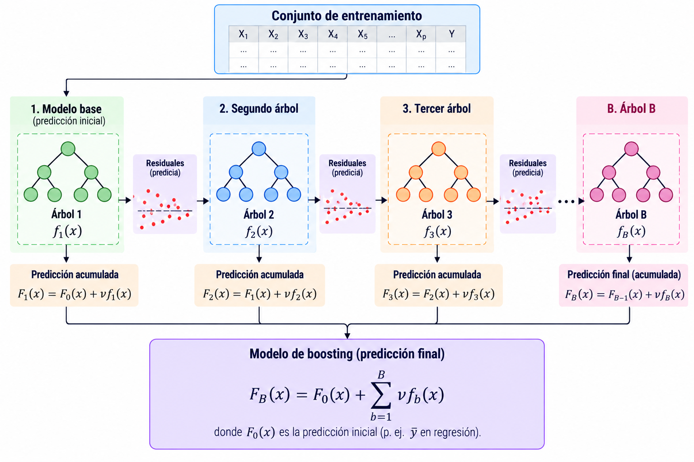

Aprendizaje supervisado
Random Forest
Introducción
En la lección anterior vimos que un árbol de decisión divide sucesivamente el espacio de predictores.
Sin embargo, los árboles pueden tener alta variabilidad: pequeños cambios en los datos pueden producir árboles diferentes.
¿Podemos obtener predicciones más estables combinando muchos árboles?
Una idea
Supongamos que entrenamos varios árboles con datos ligeramente diferentes.
Cada árbol produce su propia predicción:
\[\hat f_1(x),\ \hat f_2(x),\ \ldots,\ \hat f_B(x).\]
En lugar de elegir uno solo, podemos combinar sus predicciones.
Un método que combina varios modelos para obtener una predicción final se denomina método de ensamble (ensemble).
¿Cómo combinar las predicciones?
Clasificación
Cada árbol predice una clase.
| Árbol | Predicción |
|---|---|
| 1 | A |
| 2 | B |
| 3 | A |
| 4 | A |
| 5 | B |
La votación mayoritaria produce la clase A.
Regresión
Cada árbol predice un valor numérico.
\[10,\quad 12,\quad 11,\quad 9,\quad 13.\]
La predicción conjunta es el promedio:
\[\hat y=\frac{10+12+11+9+13}{5}=11.\]
Bootstrap
Una forma de generar conjuntos de entrenamiento diferentes es utilizar muestreo con reemplazo.
A partir de un conjunto de \(n\) observaciones, seleccionamos \(n\) veces una observación al azar, permitiendo repeticiones.
Por ejemplo, si los datos originales son
\[D=\{1,2,3,4,5\},\]
una muestra bootstrap podría ser
\[D^{(1)}=\{2,2,4,5,1\}.\]
Una muestra bootstrap tiene el mismo número de selecciones que el conjunto original, pero puede repetir observaciones y omitir otras.
Bootstrap
Supongamos que tenemos cinco observaciones:
\[D=\{1,2,3,4,5\}.\]
Podemos generar diferentes muestras:
| Muestra | Observaciones seleccionadas |
|---|---|
| \(D^{(1)}\) | 2, 2, 4, 5, 1 |
| \(D^{(2)}\) | 3, 1, 3, 5, 4 |
| \(D^{(3)}\) | 5, 5, 2, 2, 3 |
Entrenamos un árbol distinto con cada muestra y combinamos sus predicciones-
Bagging
Este procedimiento se conoce como Bootstrap Aggregating, o bagging.
- Generar \(B\) muestras bootstrap del conjunto de entrenamiento.
- Entrenar un modelo independiente con cada muestra.
- Combinar las predicciones de los \(B\) modelos.
Bagging es una estrategia general de ensamble que puede utilizarse con diferentes algoritmos de aprendizaje supervisado.
El bagging busca reducir la variabilidad de las predicciones al promediar modelos entrenados con muestras diferentes.
Bagging
En regresión, podemos combinar las predicciones de los \(B\) modelos mediante el promedio:
\[\hat f_{\mathrm{bag}}(x)=\frac{1}{B}\sum_{b=1}^{B}\hat f_b(x).\]
En clasificación, podemos elegir la clase con mayor número de votos:
\[\hat y(x)=\operatorname{mode}\{\hat f_1(x),\ldots,\hat f_B(x)\}.\]
Algunas implementaciones calculan probabilidades promedio y después seleccionan la clase con mayor probabilidad. Esto no siempre coincide con la votación mayoritaria.
Bagging

Random Forest
Random Forest introduce una segunda fuente de aleatoriedad que el método bagging no toma en cuenta.
Además de entrenar cada árbol con una muestra bootstrap, en cada división considera solamente un subconjunto aleatorio de las variables predictoras.
Random Forest = bagging de árboles + selección aleatoria de variables en cada división.
Selección aleatoria de variables
Supongamos que tenemos \(p=6\) variables predictoras:
\[X_1,X_2,X_3,X_4,X_5,X_6.\]
En lugar de evaluar las seis variables en cada nodo, seleccionamos aleatoriamente \(m=2\).
- Nodo 1: \(\{X_2,X_5\}\)
- Nodo 2: \(\{X_1,X_4\}\)
- Nodo 3: \(\{X_3,X_6\}\)
En cada nodo, el árbol busca el mejor corte solamente entre las variables seleccionadas.
¿Cómo se elige el corte?
La construcción de cada árbol sigue las mismas ideas de la lección anterior.
En clasificación, podemos minimizar el índice Gini ponderado:
\[G_{\mathrm{división}}=\frac{n_L}{n}G_L+\frac{n_R}{n}G_R.\]
En regresión, podemos buscar divisiones que reduzcan el error cuadrático dentro de las regiones.
La diferencia es que Random Forest no evalúa todas las variables en cada nodo, sino un subconjunto aleatorio.
Construcción de Random Forest
Para cada árbol \(b=1,\ldots,B\):
- Generar una muestra bootstrap de los datos de entrenamiento.
- Comenzar a construir un árbol de decisión.
- En cada nodo, seleccionar aleatoriamente \(m\) de las \(p\) variables.
- Buscar la mejor división entre esas \(m\) variables.
- Repetir hasta satisfacer los criterios de parada.
Finalmente, combinar las predicciones de los árboles.
Número de árboles
El hiperparámetro n_estimators determina el número de árboles \(B\).
- Pocos árboles: las predicciones del ensamble pueden ser menos estables.
- Más árboles: el promedio suele estabilizarse, pero aumenta el costo computacional.
Agregar árboles generalmente no provoca sobreajuste de la misma manera que aumentar la profundidad de un árbol individual; sin embargo, tampoco garantiza mejorar indefinidamente el desempeño.
Número de variables por división
El hiperparámetro max_features controla cuántas variables se consideran en cada nodo.
- Valor grande: los árboles pueden parecerse más entre sí.
- Valor pequeño: se introduce mayor diversidad, pero algunos cortes pueden ser menos informativos.
Existe un equilibrio entre la calidad de cada árbol y la correlación entre los árboles.
Profundidad de los árboles
Random Forest también permite controlar la complejidad de cada árbol.
| Hiperparámetro | Controla |
|---|---|
max_depth |
Profundidad máxima |
min_samples_split |
Mínimo de observaciones para dividir |
min_samples_leaf |
Mínimo de observaciones por hoja |
max_leaf_nodes |
Número máximo de hojas |
En Random Forest es común utilizar árboles relativamente profundos. Aun así, restringir su complejidad puede mejorar la generalización y reducir el costo computacional.
Importancia de las variables
Random Forest permite investigar qué variables contribuyen más a las predicciones.
Dos enfoques comunes son:
- Importancia basada en reducción de impureza: acumula las reducciones de impureza atribuibles a cada variable.
- Importancia por permutación: mide cuánto empeora el desempeño al alterar aleatoriamente una variable.
Una variable importante para predecir no necesariamente tiene una relación causal con la respuesta.
Importancia de las variables
La importancia basada en impureza puede favorecer variables continuas o con muchos posibles puntos de corte.
La importancia por permutación depende de la métrica y del conjunto de datos utilizados.
Además, cuando dos variables están fuertemente correlacionadas, la importancia puede distribuirse entre ellas.
La interpretación de las importancias requiere considerar la estructura y las relaciones entre las variables.
¿Necesitamos escalar?
Cada árbol realiza divisiones de la forma
\[X_j<c.\]
Random Forest combina árboles que utilizan este tipo de comparaciones.
Por lo tanto, generalmente no requiere estandarizar o normalizar las variables predictoras.
A diferencia de métodos basados en distancias, Random Forest normalmente no necesita escalamiento.
Clasificación y regresión
| Característica | Clasificación | Regresión |
|---|---|---|
| Respuesta | Categoría | Valor continuo |
| División típica | Impureza Gini | Error cuadrático |
| Predicción del ensamble | Votos o probabilidades | Promedio |
| Métricas | Accuracy, precision, recall, ROC-AUC | MAE, MSE, RMSE, \(R^2\) |
Random Forest puede utilizarse tanto para clasificación como para regresión.
Ventajas
- Puede representar relaciones no lineales e interacciones entre variables.
- Suele reducir la variabilidad respecto a un árbol individual.
- Generalmente no necesita escalamiento.
- Funciona para clasificación y regresión.
- Permite analizar importancia de variables.
Limitaciones
- Es menos interpretable que un árbol pequeño.
- Puede requerir más memoria y tiempo de entrenamiento.
- En regresión, los árboles estándar no extrapolan bien fuera del rango observado de la respuesta.
- El desempeño depende de los datos y de los hiperparámetros seleccionados.
Boosting
Otra estrategia de aprendizaje por ensamble es boosting.
A diferencia de bagging, donde los modelos se entrenan independientemente, boosting construye modelos secuencialmente.
Cada nuevo modelo intenta mejorar las predicciones del ensamble anterior.
Bagging: combina modelos entrenados independientemente.
Boosting: construye modelos que mejoran progresivamente las predicciones.
Boosting
Supongamos que queremos predecir un valor numérico.
- Entrenamos un primer modelo que produce una predicción.
- Calculamos los errores de predicción.
- Entrenamos otro modelo para aproximar esos errores.
- Combinamos las predicciones de ambos modelos.
- Repetimos el procedimiento.
En Gradient Boosting con pérdida cuadrática, cada nuevo árbol aprende a predecir los residuos del ensamble anterior.
Los modelos se construyen secuencialmente para reducir progresivamente el error.
Boosting

Bagging vs. Boosting
| Característica | Bagging | Boosting |
|---|---|---|
| Entrenamiento | Independiente | Secuencial |
| Objetivo principal | Reducir varianza | Reducir el error del ensamble |
| Combinación | Promedio o votación | Suma ponderada |
| Ejemplos | Random Forest | AdaBoost, Gradient Boosting |
XGBoost, LightGBM y CatBoost son implementaciones populares de algoritmos basados en Gradient Boosting.
Referencias
Preguntas

¿Qué sigue?
En el siguiente notebook utilizaremos Scikit-learn para entrenar un Random Forest, comparar su desempeño con un árbol de decisión y analizar el efecto de n_estimators, max_features y max_depth.
Modelado de Datos · UACJ